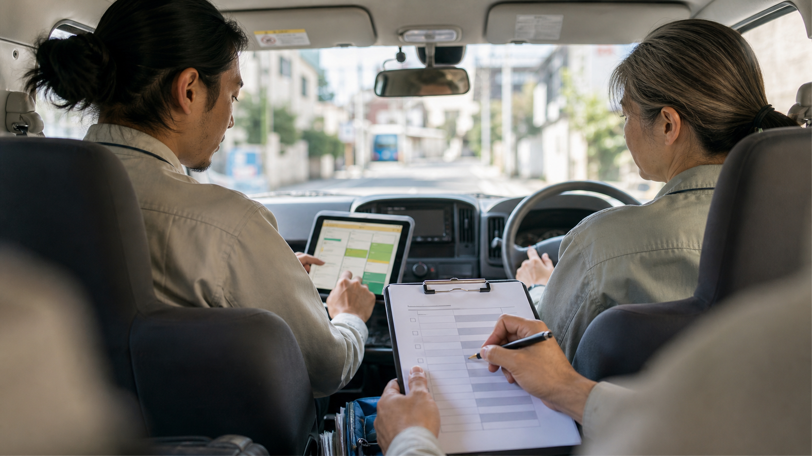

他社の改善事例 / 建築・点検・現場型
車に戻った時点で、報告書と連絡文の下書きが動き出す
写真、音声メモ、メール、予定をAIへ渡し、帰社後は写真順・指摘箇所・送信文を確認するところから始めます。
先に結論
現場から戻る前に、報告書の材料がもう並んでいる状態を作ります。
現場型の会社では、社長や責任者が外へ出るほど、事務所側の仕事が後ろへ倒れます。朝から現場を回り、昼に協力会社から電話が入り、午後に顧客メールが届く。全部大事なのに、本人がPCを開けないため、夕方まで仕事が動きません。
改善後は、現場写真、短い音声メモ、メール、予定をAIが読み、報告書の骨子、写真の並び、連絡文を先に用意します。帰社後に始まるのは作成ではなく、危険度、表現、送信先の確認です。
仕事の変化
現場で起きていたこと、変えたこと、残る判断を分けて見ます。
現場で起きていたこと
写真、メール、予定を夕方に集め直していました。こうした並べ直しが続くと、担当者は劣化の見立てやお客様への伝え方を考える前に、集中力を使い切ってしまいます。
変えたこと
AIに渡すのは、写真の分類、報告書の骨子、連絡履歴の要約、協力会社への依頼文案までです。劣化状況、危険度、見積金額、契約条件、工事範囲、送信先、個人情報は人が確認し、必要な表現だけ直します。
改善後に残るもの
その日のうちに協力会社へ日程確認を返し、顧客にも一次報告を送れます。残業を減らすだけでなく、翌朝へ持ち越す不安も減ります。
改善後の実感
帰社後の最初の15分を、作成ではなく確認に使える状態にします。
夕方から45〜60分
写真を探し、メールを読み返し、報告書と連絡文をまとめて作っていました。
確認15〜20分
AIの下書きを開き、写真順、事実、危険箇所、送信文だけを人が確認します。
当日中に一次連絡を返しやすい
協力会社への確認や顧客への一次報告が、翌日送りになりにくくなります。
現場の一場面
15時42分、車の中で「今日も報告書が残るな」と思った瞬間。
現場責任者は、午前中に外壁の点検写真を38枚撮りました。昼前には協力会社から足場の日程確認が入り、午後の移動中には別案件の顧客から雨漏り写真の確認依頼が届きます。
以前なら、全部を頭の片隅に置いたまま夕方まで走り、事務所に戻ってから写真を開き、メールを探し、報告書を作り始めていました。疲れた状態で作るので、必要な写真を入れ忘れないか不安が残ります。
改善後は、現場を出る前にスマホから写真と短い指示をAIへ渡します。AIは写真を用途別に並べ、メールと予定を見て、送信前の下書きまで用意します。
事務所で画面を開くと、写真の順番、指摘箇所の説明、確認文が並んでいます。責任者がやるのは劣化判断と表現の確認です。その日のうちに一次報告を送れることが、翌朝への不安を減らします。
改善のイメージ
写真、予定、連絡履歴が一つに並ぶと、帰社後の確認が早くなります。

移動中にも仕事を渡せる
次の現場へ向かう前に、スマホから写真と短い指示を送ります。事務所に戻るころには、報告書のたたき台と確認リストが用意されています。
写真を並べる
撮った写真を屋根、外壁、周辺、指摘箇所に分け、報告書で使う順番に並べます。人は写真の抜けと説明の正しさを確認します。
事務所へつなぐ
現場の写真、社内チャット、協力会社への確認事項を同じ案件にまとめます。事務所側も、何を待っている案件かを把握しやすくなります。
導入前
導入前は、写真、メール、予定を担当者が夕方に集め直していました。
屋根、外壁、周辺、指摘箇所を、帰社後にもう一度並べ直していました。
協力会社、顧客、社内の依頼が散らばり、対応漏れの不安が残っていました。
報告書、案内文、注意喚起、依頼文を疲れた夕方に毎回ゼロから書いていました。
仕事の流れ
現場報告と連絡文では、AIが材料を整え、人が最後に判断します。
案件フォルダ、写真置き場、メール条件、社内チャット範囲を固定します。
危険箇所、劣化箇所、周辺状況など、現場でしか分からない材料を残します。
音声やスマホ入力で、報告書、連絡文、確認リストの作成を依頼します。
判断、金額、表現、送信先を人が見て、必要箇所だけ直します。
人とAIの分担
AIが整える作業と、人が必ず確認する判断を分けます。
AIに渡しやすい作業
- 現場写真の分類と報告書骨子
- メール・社内チャットの要約
- 協力会社への依頼文下書き
- 顧客向け一次報告のたたき台
人が見るべき判断
- 劣化状況や危険度の判断
- 見積金額、契約条件、工事範囲
- 外部送信と個人情報の確認
- 事故やクレームにつながる表現の確認